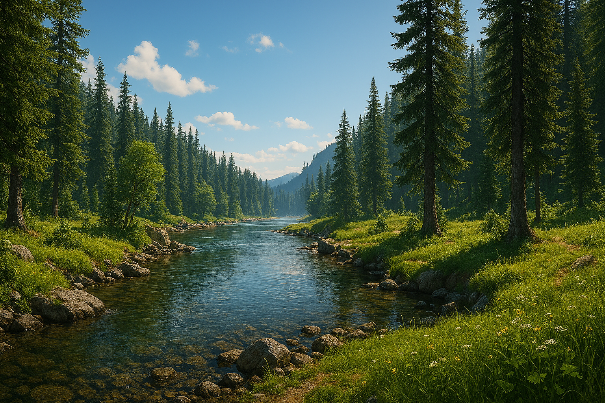

Luonnon vuodenajat
Kesä
Vehreä joki ja kirkas taivas luovat lämpimän, seesteisen kesäpäivän tunnelman.
Syksy
Ruskan oranssit ja punaiset sävyt hehkuvat kuusten lomassa ja joki virtaa rauhallisesti.
Talvi
Hiljainen ja luminen metsä ympäröi jääkylmää jokea — puhdas ja rauhallinen talvipäivä.
Varhaiskevät

Talven ruskea maasto alkaa vihertää, ja hennot kevään lehdet tuovat maisemaan uuden alun.